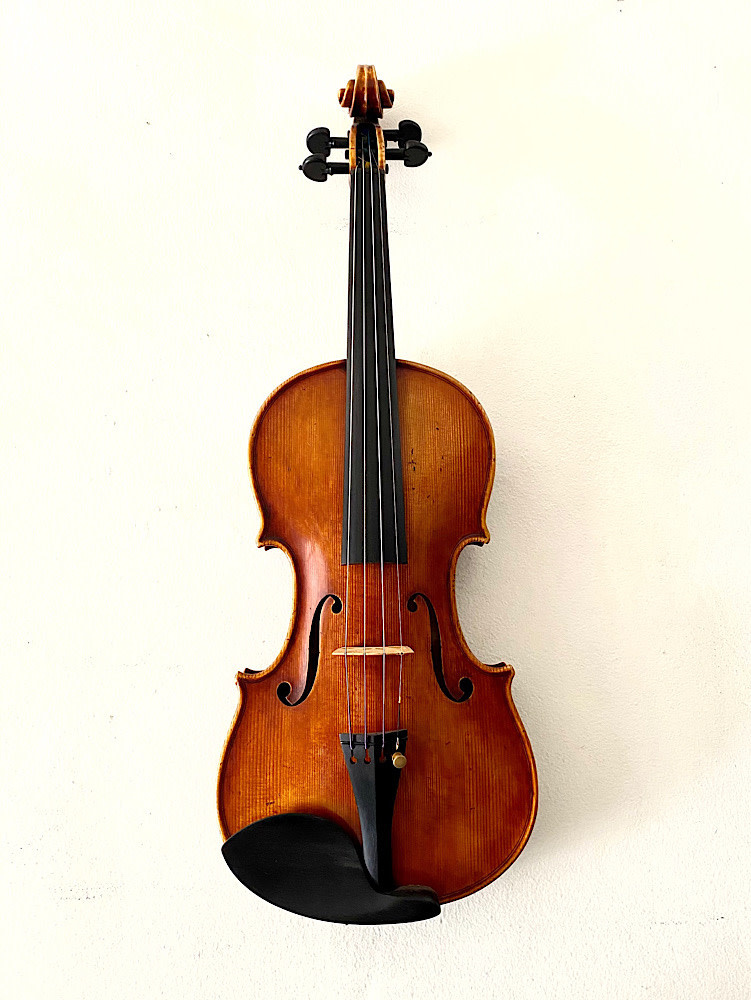

VIOLINO
CARACTERSTICAS
O violino é o mais agudo dos instrumentos de cordas friccionadas, que ainda inclui a viola, o violoncelo e o contrabaixo. Seu tom corresponde ao soprano da voz humana. É um instrumento musical de quatro cordas ( Mi, Lá, Ré e Sol). Seu timbre é agudo e estridente, mas pode produzir timbres mais aveludados dependendo do encordamento utilizado. O som geralmente é produzido pela fricção das cerdas de um arco de madeira sobre as cordas. Também pode ser executado beliscando ou dedilhando as cordas, pela fricção da parte de madeira do arco, ou mesmo por percussão com os dedos ou com a parte de trás do arco.
TÉCNICA
A execução mais comum é a fricção do arco nas cordas. Antes de tocar o instrumento, o violinista passa sobre as cerdas uma resina chamada breu, que tem o efeito de produzir o atrito entre as cerdas e as cordas, gerando o som. O som produzido pelas cordas é transmitido ao corpo oco do violino, denominado caixa de ressonância, pela alma, um cilindro de madeira que fica dentro do corpo do violino, mais ou menos abaixo do lado direito do cavalete.
POSTURA AO TOCAR
Corpo reto e peito para frente. As pernas devem ficar um pouco abertas para estabilizar o equilíbrio do corpo, pois quando o movimento do arco for rápido, o braço direito terá maior facilidade para executar as notas. O peso do corpo deve ficar apoiado nas duas pernas. Quando segurar o violino a posição tem de ser natural, isto é, sentir o violino como se fosse uma parte do corpo.